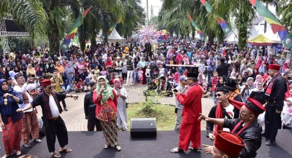

MASYARAKAT
Sebagian besar warga Depok pasti mengetahui sebuah tugu yang berada di daerah tanah baru, Depok. Tugu itu terletak pada sebuah persimpangan jalan, sehingga jangan heran ketika tugu tersebut menjadi sebuah patokan untuk menunjukan wilayah Tanah Baru.

Sejarah Gong si Bolong ini pun tergolong unik, karena juga merupakan sebuah cerita/legenda dari masyarakat Depok. Monitor Depok, sebuah harian lokal kota Depok, pada tanggal 10 Juli 2008 pernah menuliskan artikel terkait sejarah munculnya Gong si Bolong ini. Kisah ini di mulai abad ke 16, saat itu Kampung Tanah Baru masih lebih banyak hutan dan rawa, dimana penduduknya sangat sedikit dan umumnya bertani. Di Kampung Tanah Baru tersebut kerap kali terdengar bunyi-bunyian suara Gamelan di malam hari, namun ketika sumber dari suara tersebut dicari tak satu pun orang yang dapat menemukannya.
Kesenian Gong si Bolong, telah menjadi kesenian khas Depok. Terlepas benar atau tidak legenda penemuannya. Kesenian ini Patut lah dilestarikan sebagai salah satu kesenian khas dan budaya Depok.